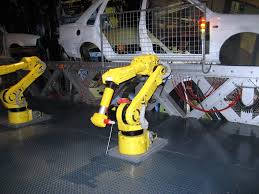
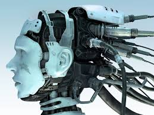

Mechatronics is a very wide course and has applications in various fields of engineering and technology.
 | Application | About |
|---|---|
| Machine vision | Machine vision (MV) is the technology and methods used to provide imaging-based automatic inspection and analysis for such applications as automatic inspection, process control, and robot guidance, usually in industry. Machine vision refers to many technologies, software and hardware products, integrated systems, actions, methods and expertise. Machine vision as a systems engineering discipline can be considered distinct from computer vision, a form of computer science. It attempts to integrate existing technologies in new ways and apply them to solve real world problems. The term is the prevalent one for these functions in industrial automation environments but is also used for these functions in other environments such as security and vehicle guidance. |
| Automation | Automation, or Labor-saving technology is the technology by which a process or procedure is performed with minimal human assistance. Automation or automatic control is the use of various control systems for operating equipment such as machinery, processes in factories, boilers and heat treating ovens, switching on telephone networks, steering and stabilization of ships, aircraft and other applications and vehicles with minimal or reduced human intervention. |
| Robotics | Robotics is an interdisciplinary research area at the interface of computer science and engineering. Robotics involves design, construction, operation, and use of robots. The goal of robotics is to design intelligent machines that can help and assist humans in their day-to-day lives and keep everyone safe. Robotics draws on the achievement of information engineering, computer engineering, mechanical engineering, electronic engineering and others. |
| Control systems | A control system manages, commands, directs, or regulates the behavior of other devices or systems using control loops. It can range from a single home heating controller using a thermostat controlling a domestic boiler to large Industrial control systems which are used for controlling |
| Automotive engineering | Automotive engineering, along with aerospace engineering and naval architecture, is a branch of vehicle engineering, incorporating elements of mechanical, electrical, electronic, software, and safety engineering as applied to the design, manufacture and operation of motorcycles, automobiles, and trucks and their respective engineering subsystems. It also includes modification of vehicles. Manufacturing domain deals with the creation and assembling the whole parts of automobiles is also included in it. The automotive engineering field is research -intensive and involves direct application of mathematical models and formulas. The study of automotive engineering is to design, develop, fabricate, and test vehicles or vehicle components from the concept stage to production stage. Production, development, and manufacturing are the three major functions in this field. |